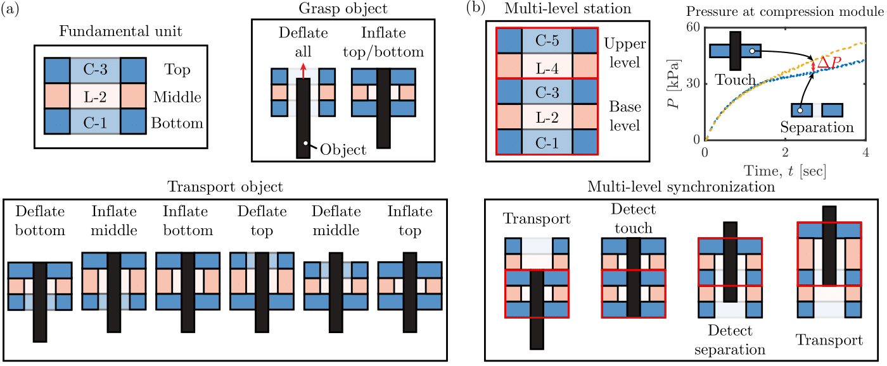
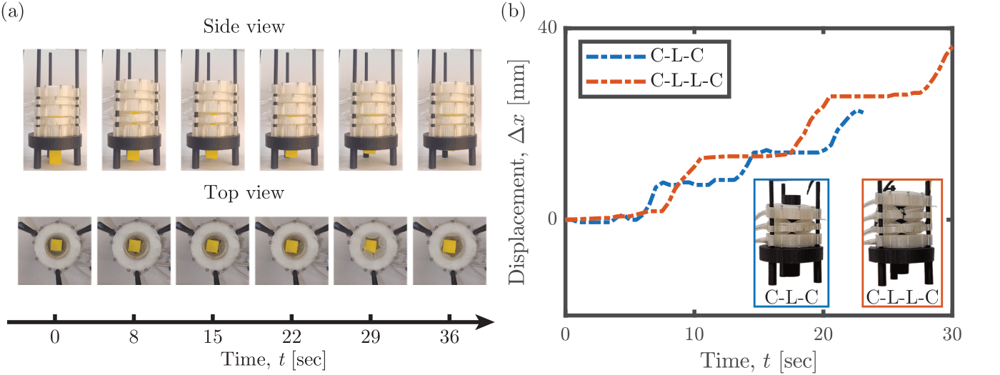

Bio-Inspired Pneumatic Modular Actuator for Peristaltic Transport
Authors: Brian Ye, Zhuonan Hao, Priya Shah, Mohammad K. Jawed
A modular donut-shaped soft actuator system that uses sequential radial and axial inflation to transport objects via peristaltic waves.
Demo Video
Core functionality and coordination of modular units.
Results & Performance

Control of peristaltic transportation. (a) The fundamental unit, composed of two compression modules at the top and bottom with a longitudinal module in the middle, enables object grasp and transport through sequence-based control of the actuation modules. (b) The multi-level station, where synchronization is achieved by acquiring pressure signal differences ∆P between the adjacent compression modules. Actuation timing is adjusted based on whether the object is grasped by the upper level modules.

Demonstration of the modular features on system variation. (a) Multi-level synchronization in object transportation. (b) Module sequence on object transportation performance during three periods, i.e., C–L–C of 1.00 ± 0.11 mm/s and C–L–L–C of 1.23 ± 0.06 mm/s.
Visual Documentation


Design & Fabrication
The module uses Ecoflex rings with internal chambers and a TPU strain-limiting casing. Below is the full guide on how these modules are manufactured.
Manufacturing Guide Video
Quick Specs
- Material: Ecoflex 00-45
- Casing: TPU (3D Printed)
- Sensors: MPRLS Pressure
- Logic: Arduino Mega